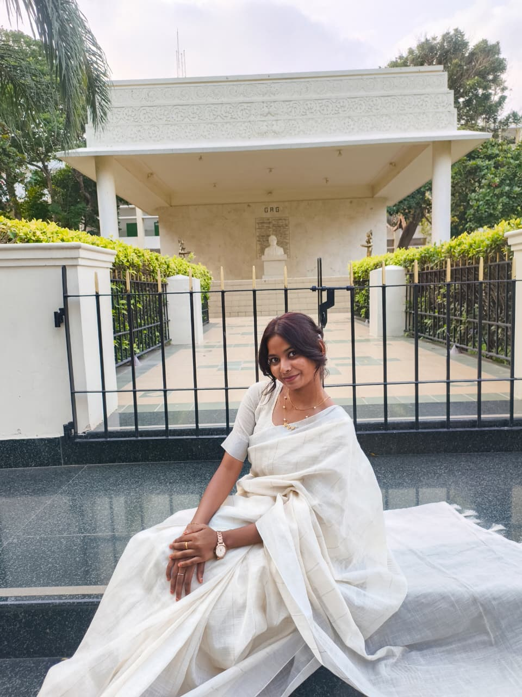
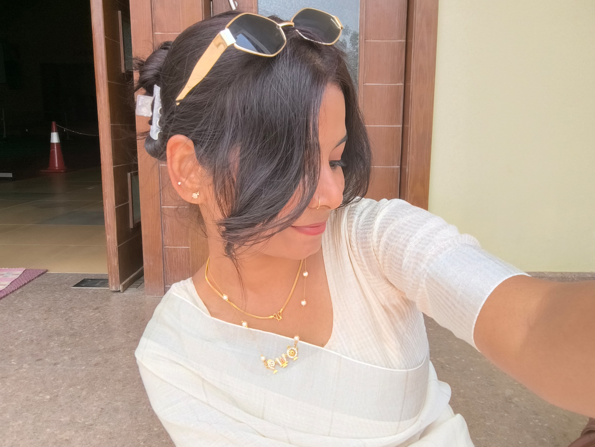
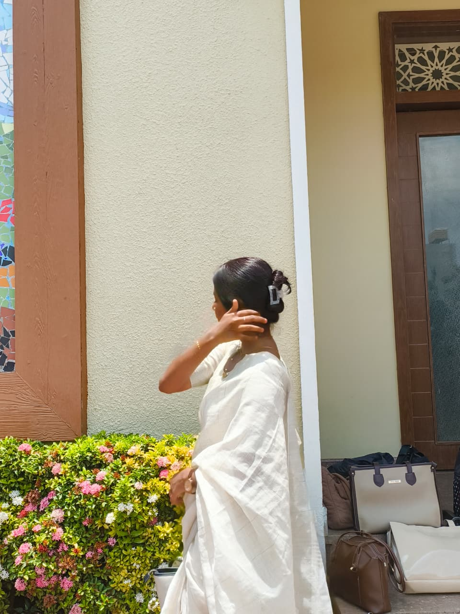
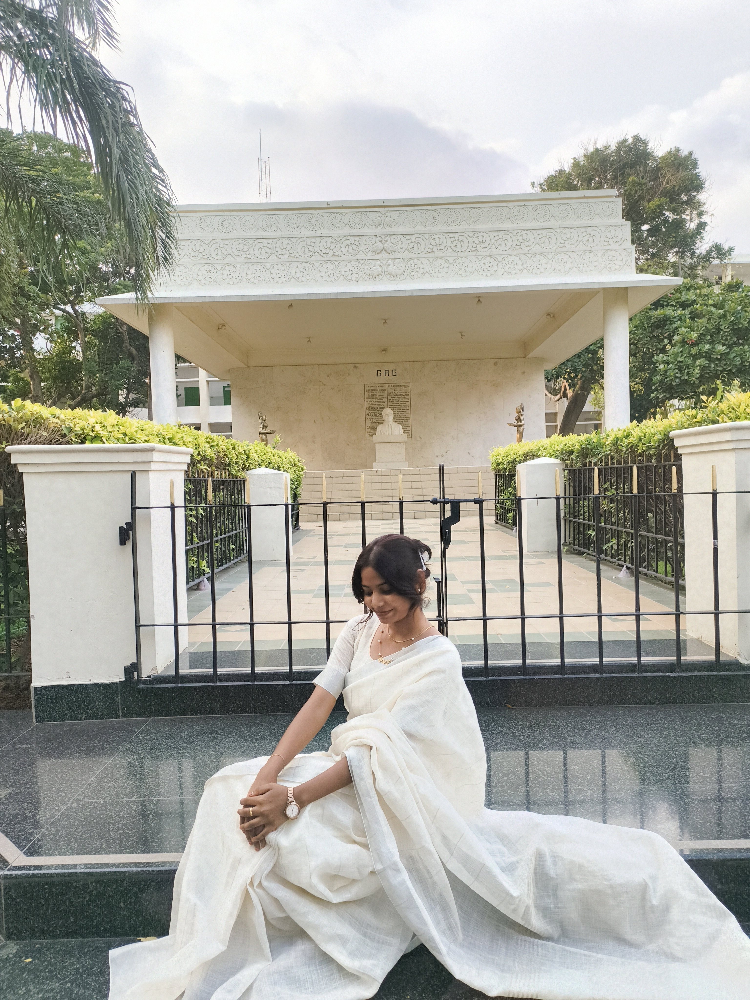
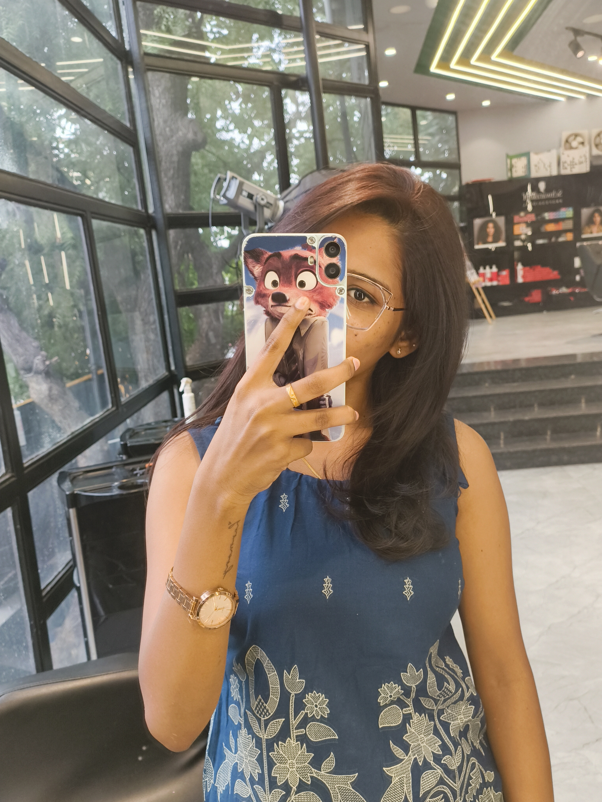
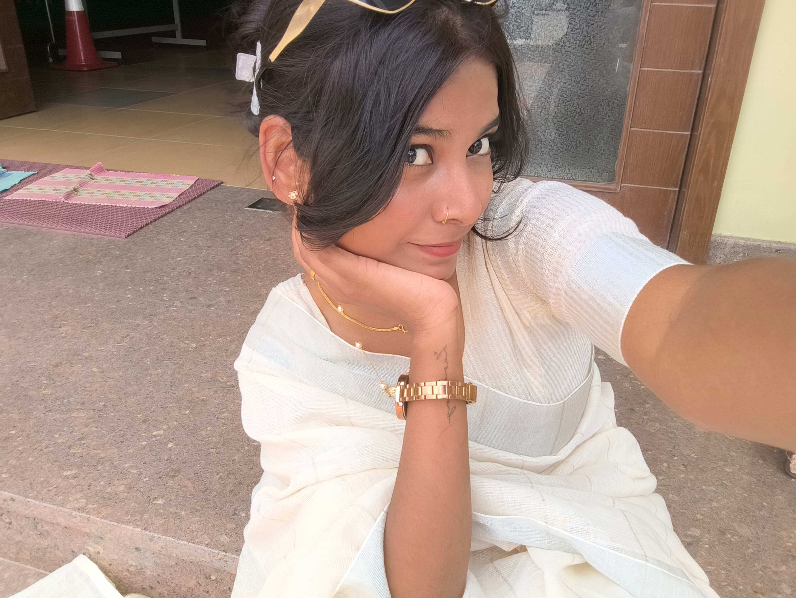

Reference 01
Fashion · Creativity · Strategy
Praba Harini R
Fashion & Luxury Brand Management Aspirant | Fashion Design | Brand & Creative Strategy
Where science meets style.
Exploring the relationship between fashion, identity, creativity and the strategy behind luxury brands.

01 / The Person
A meeting of two worlds.
Creative and ambitious Biotechnology undergraduate with formal training in garment design, fashion illustration and fashion presentation.
My scientific education has given me a rigour — research, documentation, precision and analytical thinking — while my training in garment designing gave me a way to explore all of that through illustration, silhouette, styling and presentation.
I combine analytical discipline with visual creativity and a strong interest in luxury fashion, brand management, communication and creative strategy. Drawn to Parisian fashion, Vogue, luxury houses and the business behind iconic brands, I am preparing for that conversation through the Fashion & Luxury Brand Management programme at IFA Paris.
- Undergraduate CGPA
- 8.27 / 10
- Diploma
- Garment Designing
- Participant
- Ivenza Fashion Walk
02 / Selected Work
Ideas in form.
A developing collection of fashion illustrations, design exploration and garment work.

01
Illustration 01
Fashion illustration study.

02
Illustration 02
Fashion illustration study.

03
Illustration 03
Fashion illustration study.

04
Garment Project
Garment developed during diploma coursework.

05
Design Exploration
Concept, silhouette and shape exploration.
06
Fashion Presentation
Fashion presentation and styling, including the Ivenza Fashion Walk.
A selection of fashion illustrations, design exploration and garment work.
03 / The Journey
An evolving perspective.
-
Diploma in Garment Designing
PSGR Krishnammal College for Women. One year of fashion designing — garment construction, the fundamental principles of fashion design, fashion illustration, concept exploration and a developed garment.
-
Ivenza Fashion Walk
Participation in a fashion presentation event.
-
B.Sc. Biotechnology
PSGR Krishnammal College for Women. CGPA 8.27/10. Academic research: a Gamma-D Crystallin project (scientific analysis, documentation and interpretation) and a Biosensor project (concepts, applications and analytical problem-solving). Expected completion: 2027.
-
Animal Cell Culture Internship
BBC Bangalore. A structured laboratory environment that built precision, documentation, observation, teamwork and analytical problem-solving.
-
Marketing Internship — Aditya Birla
Internship with the marketing department from 2nd June to 31st July 2026 — exposure to brand communication, consumer experience and the discipline of a commercial business environment.
-
IFA Paris — September 2027
Intention to pursue Fashion & Luxury Brand Management at IFA Paris.
Future Goal
04 / Certificates
Credentials & certifications.
Selected certificates and completion records. Open any certificate to view the original document.
01
Certificate 01
View certificate · docu1.pdf
02
Certificate 02
View certificate · docu2.pdf
03
Certificate 03
View certificate · docu3.pdf
Each frame links to the saved certificate document. Edit the titles and captions here to name the certificates.
05 / Science & Precision
A different kind of attention to detail.
I came to fashion through science, and that has become a strength rather than a detour.
My biotechnology degree trained me in research, documentation and analytical problem-solving — habits I built through a Gamma-D Crystallin research project and a Biosensor project.
A two-month Animal Cell Culture internship at BBC Bangalore added another layer: precision, careful observation, teamwork, and the discipline of working inside a structured laboratory environment. A second internship with the marketing department at Aditya Birla then connected that rigour to brand communication and consumer experience.
None of that makes me a luxury brand manager. What it gives me is an interdisciplinary way to look at a problem — to research a subject properly, notice what others pass over, and stay exact about the details that shape how a brand is understood. It is a perspective I am still developing, and one I want to carry into fashion.
06 / Capabilities
What I bring to the table.
Group A
Creative
Group B
Brand & Business
Group C
Professional
Tools Microsoft Office · Canva
Language English — Professional Proficiency
07 / Visual References
An eye for the world of fashion.
Subjects I return to — Parisian fashion, editorial culture and the language of luxury brands.
Reference 02
Editorial Storytelling
Reference 03
Vogue & Fashion Culture
Reference 04
Fashion Photography
Reference 05
Luxury Communication
Reference 06
Brand Identity
08 / The Next Chapter
A future shaped by creative vision.
I aspire to build an international career at the intersection of fashion, luxury, creativity and business. My goal is to deepen my understanding of luxury brand management and fashion communication, pursue my ambitions through the Fashion & Luxury Brand Management programme at IFA Paris, and eventually establish and lead my own fashion and luxury brand portfolio.
IFA Paris · September 2027 Intake
Programme aspiration — an application intention, not an offer of admission.
09 / Let’s Connect
Every good conversation starts somewhere.
For conversations about fashion, creativity, brand strategy and future opportunities, feel free to get in touch.